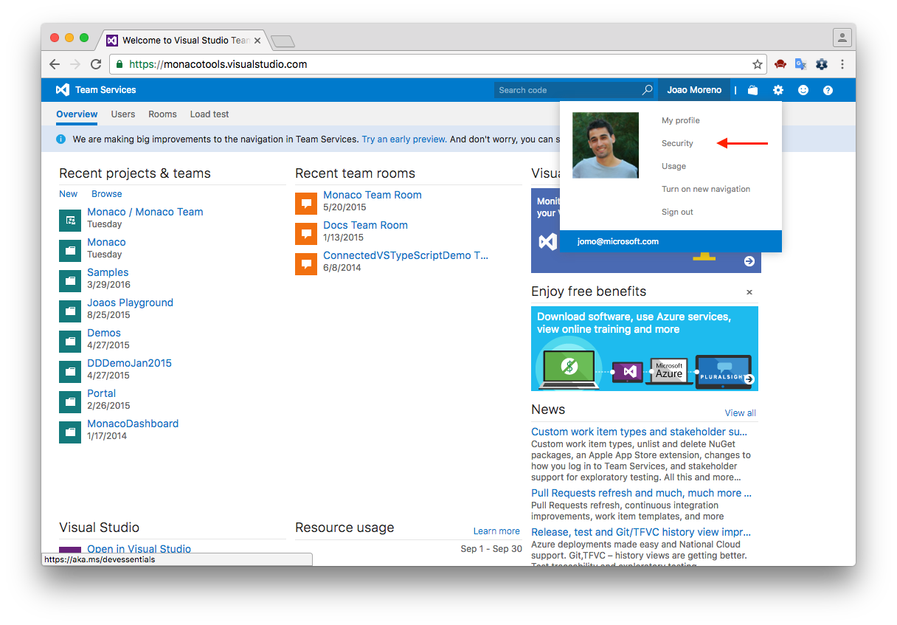
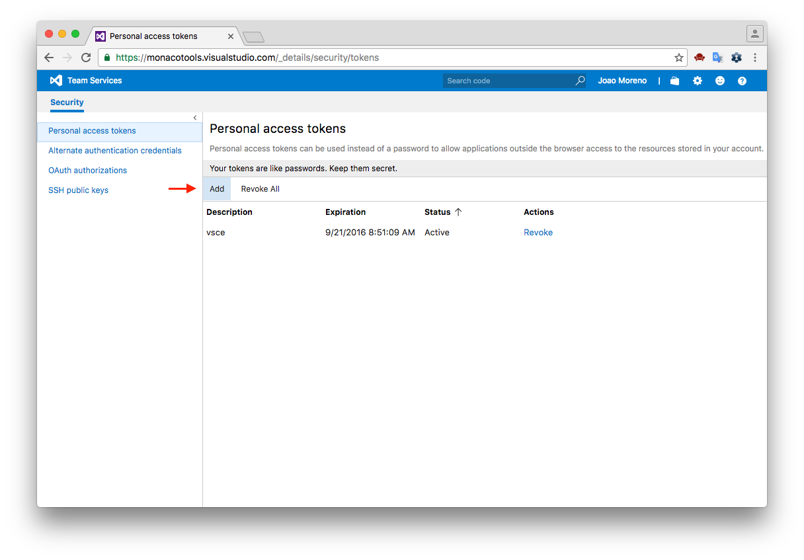
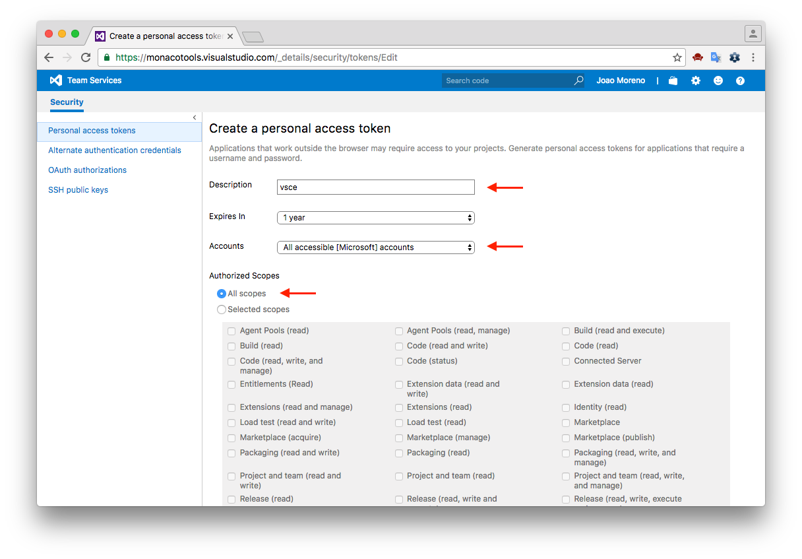

Publishing Extensions
vsce - Publishing Tool Reference
vsce is the command line tool you’ll use to publish extensions to the Extension Marketplace. You can also load extensions locally and share them via email or a UNC drive.
Installation
Make sure you have Node.js installed. Then simply run:
|
Usage
You’ll use the vsce command directly from the command line. For example, here’s how you can quickly publish an extension:
|
For a reference on all the available commands, run vsce --help.
Publishing Extensions
Visual Studio Code leverages Visual Studio Team Services for its Marketplace services. This means that authentication, hosting and management of extensions is provided through that service.
vsce can only publish extensions using Personal Access Tokens. You need to create at least one in order to publish an extension.
Get a Personal Access Token
First, make sure you have a Visual Studio Team Services account.
In the following examples, the account name is monacotools. From your account’s home page (eg: https://monacotools.visualstudio.com), go to the Security page:

Click Add to create a new Personal Access Token:

Give the Personal Access Token a nice description, optionally extend its expiration date to 1 year, make it access every account and set the authorization to all scopes:

The next screen will display your newly created Personal Access Token. Copy it, you’ll need it to create a publisher.
Create a Publisher
A publisher is an identity who can publish extensions to the Visual Studio Code Marketplace. Every extension needs to include a publisher name in its package.json file.
Once you have a Personal Access Token, you can create a new publisher using vsce:
|
vsce will remember the provided Personal Access Token for future references to this publisher.
Note: Alternatively, create your publisher in http://marketplace.visualstudio.com/manage and login in vsce, as described in the next section.
Login to a Publisher
If you already created a publisher before and simply want to use it with vsce:
|
Similarly to the create-publisher command, vsce will ask you for the Personal Access Token and remember it for future commands.
You can also enter your Personal Access Token as you publish with an optional parameter -p <token>.
|
Auto-incrementing the Extension Version
You can auto-increment an extension’s version number when you publish by specifying the SemVer compatible number to increment: major, minor, or patch.
For example, if you want to update an extension’s version from 1.0.0 to 1.1.0, you would specify minor:
|
This will modify the extension’s package.json version attribute before publishing the extension.
You can also specify a complete SemVer compatible version on the command line:
|
Packaging Extensions
You may want to simply package extensions without publishing them to the store. Extensions will always be packaged into a .vsix file. Here’s how:
|
This will package your extension into a .vsix file and place it in the current directory. It’s possible to install .vsix files into Visual Studio Code. See Install from a VSIX for more details.
Sharing Privately with Others
If you want to share your extension with others privately, you can simply send them your packaged extension .vsix file.
Visual Studio Code Compatiblity
When authoring an extension, you will need to describe what is the extension’s compatibility to Visual Studio Code itself. This can done via the engine.vscode field inside package.json:
|
A value of 1.8.0 means that your extension is compatible only with VS Code 1.8.0. A value of ^1.8.0 means that your extension is compatible with VS Code 1.8.0 and
onwards, including 1.8.1, 1.9.0, etc.
You can use the engine.vscode field to make sure the extension only gets installed for clients which contain the API you depend on. This mechanism plays well with the
Stable release as well as the Insiders one.
For example, imagine that the latest Stable version of VS Code is 1.8.0 and that during 1.9.0‘s development a new API is introduced and thus made available in the Insider release through version 1.9.0-insider. If you want to publish an extension version which benefits from this API, you should indicate a version dependency of ^1.9.0. Your new extension version will be installed only on VS Code >=1.9.0, which means all current Insider customers will get it, while the Stable ones will only get the update when Stable reaches 1.9.0.
Advanced Usage
Marketplace Integration
You can customize how your extension looks in the Visual Studio Marketplace. See the Go extension for an example.
Here are some tips for making your extension look great on the Marketplace:
- A
README.mdfile at the root of your extension will be used to populate the extension’s Marketplace page’s contents.vscewill modify README links for you in two different ways:- If you add a
repositoryfield to yourpackage.jsonand if it is a public GitHub repository,vscewill automatically detect it and adjust the links accordingly. - You can override that behavior and/or set it by using the
--baseContentUrland--baseImagesUrlflags when runningvsce package. Then publish the extension by passing the path to the packaged.vsixfile as an argument tovsce publish.
- If you add a
- A
LICENSEfile at the root of your extension will be used as the contents for the extension’s license. - A
CHANGELOG.mdfile at the root of your extension will be used as the contents for the extension’s changelog. - You can set the banner background color by setting
galleryBanner.colorto the intended hex value inpackage.json. - You can set an icon by setting
iconto a relative path to a squared128pxPNG file included in your extension, inpackage.json.
Also see Marketplace Presentation Tips.
.vscodeignore
You can create a .vscodeignore file to exclude some files from being included in your extension’s package. This file is a collection of glob patterns, one per line.
For example:
|
You should ignore all files not needed at runtime. For example, if your extension is written in TypeScript, you should ignore all **/*.ts files, like in the previous example.
Note: Development dependencies listed in devDependencies will be automatically ignored, you don’t need to add them to the .vscodeignore file.
Pre-publish step
It’s possible to add a pre-publish step to your manifest file. The command will be called every time the extension is packaged.
|
This will always invoke the TypeScript compiler whenever the extension is packaged.
Next Steps
- Extension Marketplace - Learn more about VS Code’s public extension Marketplace.
- Testing Extensions - Add tests to your extension project to ensure high quality.
Common Questions
Q: I get 403 Forbidden (or 401 Unauthorized) error when I try to publish my extension?
A: One easy mistake to make when creating the PAT (Personal Access Token) is to not select all accessible accounts in the Accounts field dropdown (instead selecting a specific account). You should also set the Authorized Scopes to All scopes for the publish to work.
Q: I can’t unpublish my extension through the vsce tool?
A: You may have changed your extension ID or publisher name. You can also manage your extensions directly on the Marketplace by going to the manage page. You can update or unpublish your extension from your publisher manage page.
Q: Why does vsce not preserve file attributes?
A: Please note that when building and publishing your extension from Windows, all the files included in the extension package will lack POSIX file attributes, namely the executable bit. Some node_modules dependencies rely on those attributes to properly function. Publishing from Linux and OS X works as expected.